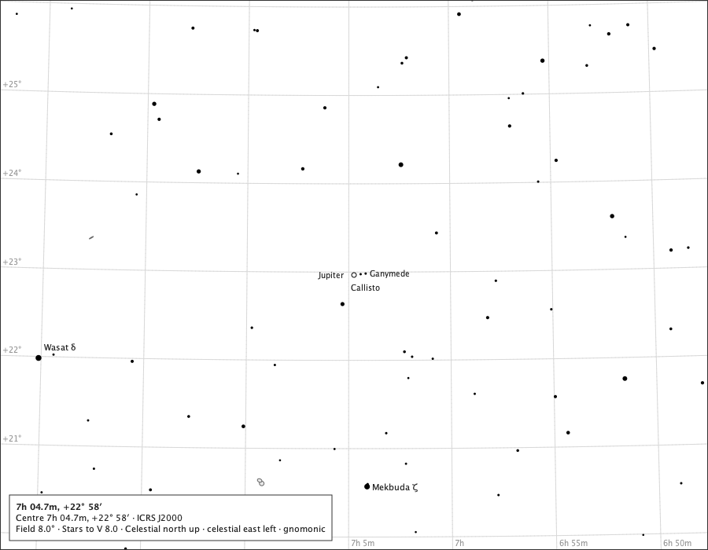

Jupiter and its moons
A symbol, not a size

- Region
- Gemini
- Field
- 8°
- Ink
- Jupiter's symbol, the two moon marks and their names are Jupiter-and-moons module ink; everything else is the core chart.
- Source
- docs/studies/gallery/jupiter-in-gemini.png
- Produced
- Composed by the production chart component with the real Jovian module, its reference-ink and body painters (GalleryPageMain); regenerated and compared by make evidence-contracts. Sprint 45 tree.